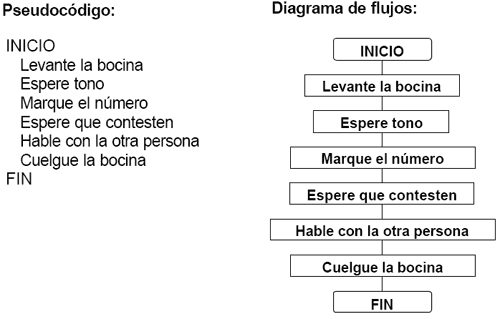
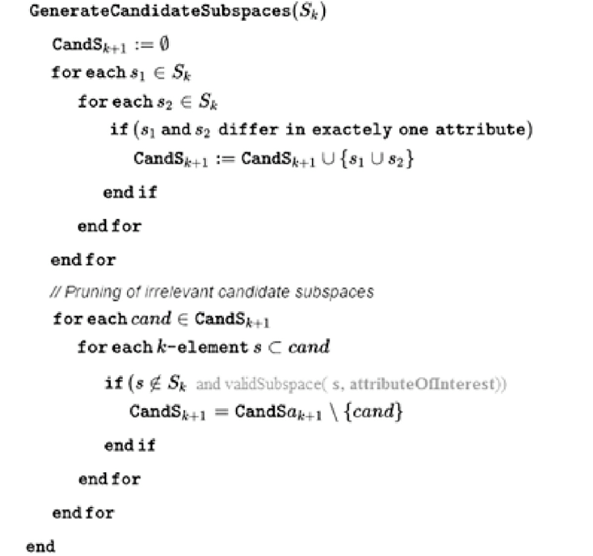

INFORMACION SOBRE EL TEMA
Bienvenido a la sección de información, aquí podrás hacer una retro alimentación del tema propuesto en el juego y además si deseas profundizar mas el tema, puedes aprender con la siguiente información:
¿QUE ES UN PSEUDOCODIGO?
.jpg)
Un pseudocodigo en palabras simples, es aquel lenguaje enviado a la computadora, entendido por nosotros con el objetivo de cumplir una tarea, entre las principales características sobre el pseudocodigo tenemos que se puede ejecutar en un ordenador, es una forma de representación sencilla de utilizar y manipular, facilita el paso del programa al lenguaje de programación, es independiente del lenguaje de programación que se vaya a utilizar y es un método que facilita la programación y solución al algoritmo del programa.
Estructura del Pseudocodigo
Proceso: Comienza con la palabra clave Proceso o Algoritmo seguida del nombre del programa.
 Estructura de control Secuencial: Le sigue una secuencia de instrucciones. Una secuencia de instrucciones es una lista de una o mas instrucciones y estructuras de control.
.jpg)
Fin: Finaliza con la palabra FinProceso o FinAlgoritmo.

WebGrafia
Información Basada en: OpenWebinars que es pseudocodigo y Pseudocodigo Desarrollo web